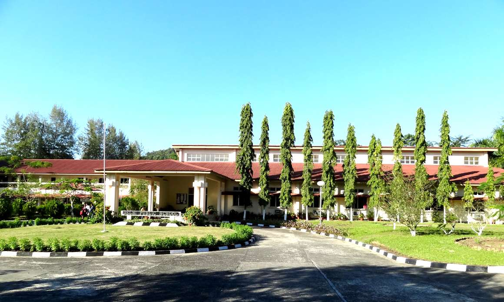
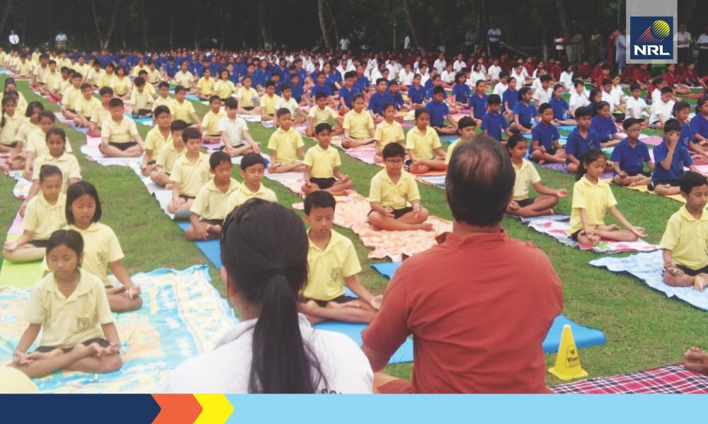
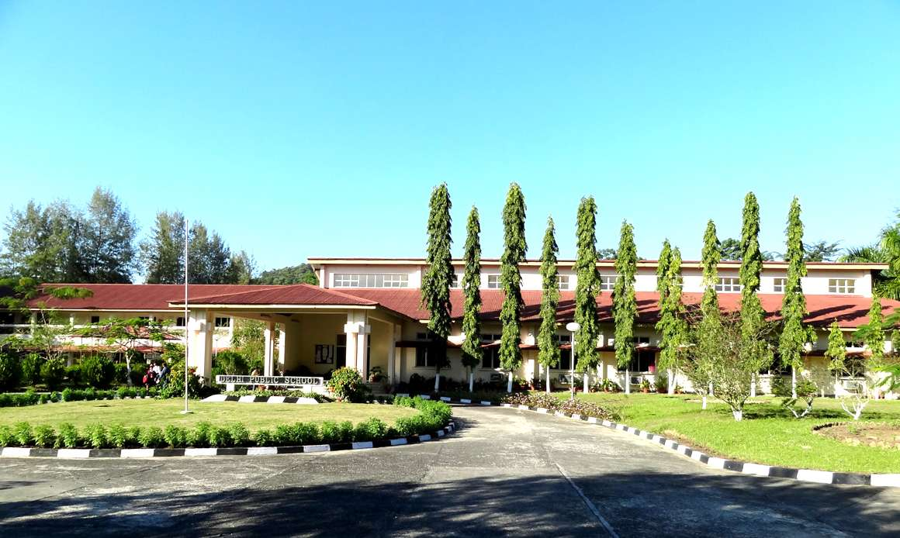
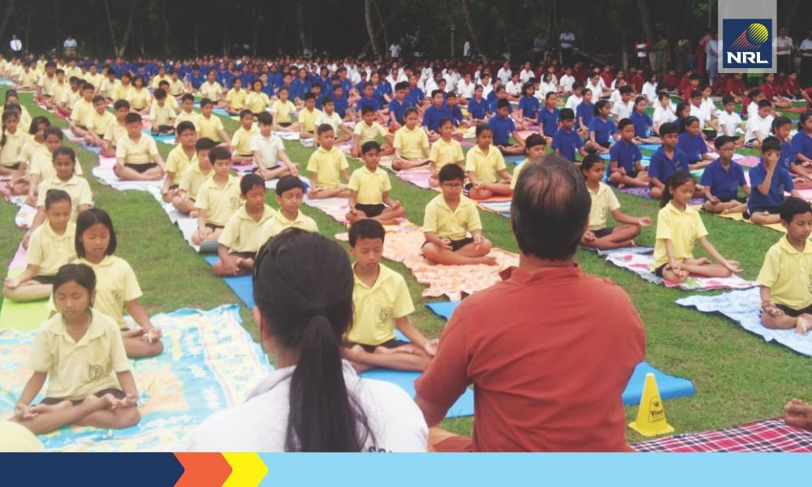

places must visit
 



School
I have visited.
Our school

The school was started with the strength of just 55 students including 20 hostellers under Mr. R.R. Pathak the founder Principal. Born on 12th September 1997, Delhi Public School, Numaligarh has carved out a niche for itself in the North East region and stand as a premier institution of learning today. Its soul aim is to render quality education to the residents of Numaligarh and neighboring places in the state of Assam and beyond.